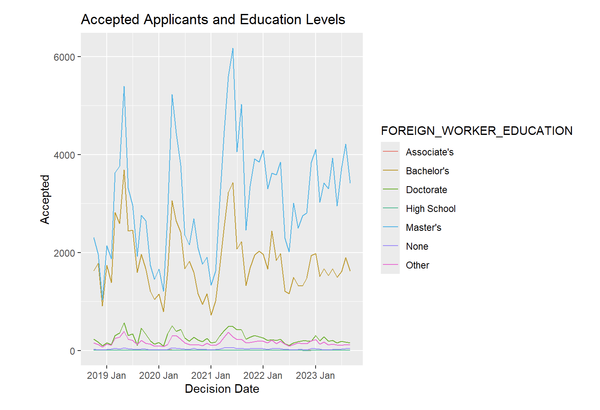
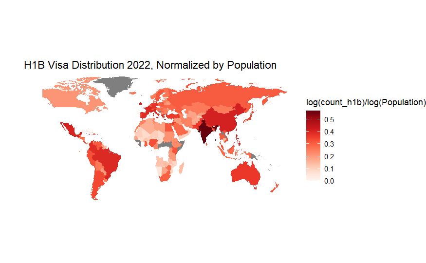
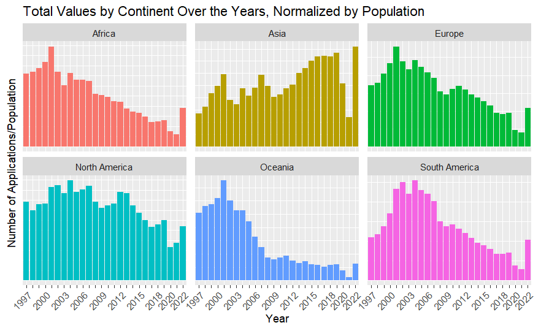
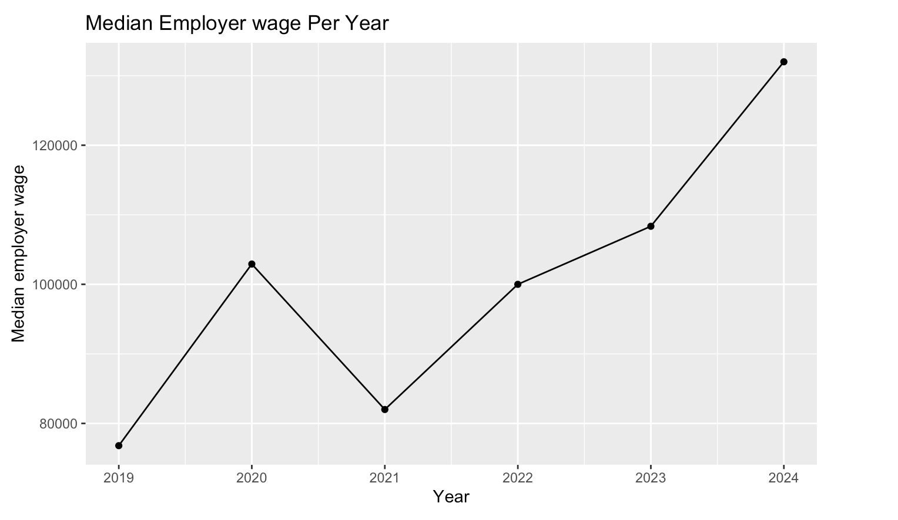
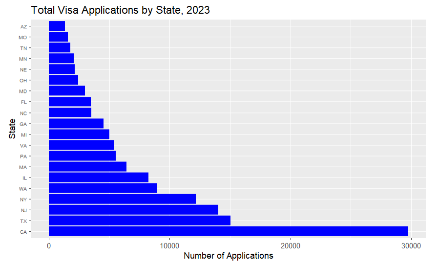

H1B workers in US
How is H1B applicants doing?
Introduction
The H-1B visa is a non-immigrant category in the United States designed for employers to hire foreign workers in specialty occupations that require specialized knowledge and at least a bachelor’s degree, such as IT, finance, engineering, and medicine. This visa is essential for filling workforce gaps in sectors like technology, where there is a high demand for skilled professionals. With its annual cap and stringent selection criteria, the H-1B visa remains one of the most competitive categories, and understanding its applicant demographics and economic factors can provide valuable insights into it’s effectiveness.
This page aims to provide an accessible overview of how H-1B visa applicants are faring, presenting insights into applicant trends, and economic contributions.
Overview of H-1B Visa Applicants
The majority of H-1B visa applicants are highly educated professionals, primarily working in technology, engineering, and healthcare. The majority of the accepted applicants have at least master degrees.

Countries like India and China dominate the applicant pool, reflecting strong educational systems in these regions and their economies’ growth. In fact, 81.4% of applicants were from India in 2022, when 17.5$ of the worlds population is in India. From 1997 to 2022, applicants from India comprise 61.3% of the total applicant pool, and applicants from Asia comprised 80.4%.

In addition, Asia is the only continents where the number of H-1B visa applications has trended upwards in the last 20 years. All other countries have remained stagnant or decreased. 
80% of the Job Titles of H-1B visa holders contain the word ‘software’, and 40% of the job titles contain the word ‘engineer’ or ‘developer’. Therefore, many applicants seek positions in major U.S. tech hubs such as Silicon Valley, Seattle, and New York. Because of the specialized skill set of H-1B holders, many are hired for jobs that pay above the median salary in America, which is around $60,000. Most also hold degrees in their field. Consistent with the market trends, H-1B holders with more advanced degrees tend to have higher annual salary. Note that, because many of the jobs are temporary, the salaries may be listed on a 6-month basis. So, the concentration in this graph around the wage = $45,000 is, in reality, a $90,000 annual salary . 
How can H1B applicants find a job these days?

Interpretation of the barchart
Looking at the chart, H1B applicants have a better odds of finding a full time position in california or texas since thats where majority of tech companies are. H1B applicants should plan ahead and think about what states they want to live in.
Economic Contributions of H-1B Workers H-1B visa holders significantly contribute to the U.S. economy.Employers rely on their specialized skills to fill key gaps, particularly in IT, engineering, and research roles.
There are several challenges faced by H-1B Applicants, which include:
Visa Lottery: With the number of applications exceeding the annual cap, many applicants face rejection despite qualifying for positions.
Processing Delays: Lengthy processing times and stringent documentation requirements add stress to the application process.
Employer Compliance: Employers must carefully navigate regulatory requirements, making it challenging for smaller companies to hire foreign talent.
Workplace Limitations: Visa holders may be tied to a specific employer, limiting their career mobility and bargaining power.
Despite the challenges and competitive nature of the H-1B visa program, applicants continue to apply in large numbers. Their skills and expertise are crucial to many industries, especially technology and healthcare, where workforce shortages exist. By understanding trends and challenges, policymakers and employers can work towards a fair and effective system that continues to attract the best talent worldwide
Conclusion
Despite facing significant challenges, H-1B visa applicants continue to be an essential source of skilled labor for the U.S. economy, particularly in the technology and engineering sectors. Understanding their demographic trends, challenges, and economic contributions provides insight into the critical role they play and highlights areas where policy improvements could benefit both the applicants and the U.S. workforce to attract more H-1B visa applicants.